Unsupervised Learning
Unsupervised learning notes on clustering (K-means, picking an algorithm and the number of clusters) and dimensionality reduction such as PCA, plus the curse of dimensionality.
Unsupervised machine learning is a type of machine learning where the model is trained on a dataset without labeled target values or explicit supervision. In unsupervised learning, the algorithm is tasked with finding patterns, structures, or relationships within the data on its own.
Table of Content
Description of Unspervised ML
Here's a description of unsupervised machine learning:
| Aspect | Description |
|---|---|
| No Labeled Output | Unlike supervised learning, where the algorithm is provided with input-output pairs and learns to map inputs to specific outputs, unsupervised learning deals with data where there are no target labels or explicit output values to predict. |
| Objective | The primary objective of unsupervised learning is to discover the inherent structure or organization within the data. This could involve finding clusters of similar data points, reducing the dimensionality of the data, or discovering underlying patterns. |
| Common Tasks | Clustering: One common task in unsupervised learning is clustering, where the algorithm groups similar data points together into clusters or categories. Common clustering algorithms include K-Means, hierarchical clustering, and DBSCAN. </br></br>Dimensionality Reduction: Unsupervised learning is also used for dimensionality reduction, which involves reducing the number of features or variables in the data while preserving its essential structure. Principal Component Analysis (PCA) and t-Distributed Stochastic Neighbor Embedding (t-SNE) are popular dimensionality reduction techniques.</br></br>Anomaly Detection: Another task is anomaly detection, where the algorithm identifies data points that are significantly different from the rest of the data. This is useful for detecting outliers or unusual patterns in the data.</br></br>Density Estimation: Unsupervised learning can be used for density estimation, which involves estimating the probability distribution of the data. Kernel Density Estimation (KDE) is an example of a density estimation technique. |
| Feature Learning | Unsupervised learning is often used for feature learning, where the algorithm automatically learns relevant features or representations from the data. This can be particularly beneficial for tasks like image and text analysis. |
| Evaluation | Evaluating the performance of unsupervised learning algorithms can be challenging because there are no ground truth labels. Evaluation metrics depend on the specific task; for example, silhouette score for clustering or reconstruction error for dimensionality reduction. |
| Applications | Unsupervised learning finds applications in various domains, including image and speech recognition, recommendation systems, anomaly detection in cybersecurity, customer segmentation in marketing, and more.</br></br>It is particularly useful in exploratory data analysis when you want to gain insights from data that lacks clear labels or when you want to preprocess data before applying supervised learning techniques. |
| Challenges | Unsupervised learning can be challenging because it relies on the algorithm's ability to discover meaningful patterns without explicit guidance.</br></br>The choice of the right algorithm and hyperparameters can significantly impact results. |
In summary, unsupervised machine learning is a branch of machine learning focused on finding patterns and structures within data without the use of labeled target values. It is a valuable tool for uncovering hidden insights and knowledge from large and complex datasets.
Two cases of unsupervised learning
One popularly use case is called clustering, where we use our unlabeled data to identify an unknown structure and an example of this may be segmenting our customers into different groups.
The other major use case for unsupervised algorithms is for dimensionality reduction. Namely using structural characteristics to reduce the size of our dataset without losing much information contained in that original dataset.
The Curse of dimensionality
The dimensionality refers to the number of features in our dataset, and theortically the more features we have the better the model should perform, since models will have more features to learn from, however in real life there are several reasons why too many features may end up leading to worse performance in practice.
If we have several features, things can go wrong;
- Maybe some of those features are spurios correlations (meaning they correlate within your dataset, but with new data outside form our training dataset)
- Too many features may create more noise and signal.
- Algorithms find it harder to sort through non-meaningful features.
- The number of training examples required will increase exponentially with the dimensionality
- On top of that, higher dimensions will often lead to slower performance as dealing with more columns is going to be more computationally expensive.
- Also it will lead to the incidence of outliers increasing as the dimensionality increases
Here are some of the specific problems that can arise due to the curse of dimensionality:
- Data sparsity: As the number of dimensions increases, the data becomes more and more sparse. This means that there are fewer and fewer data points that are close to each other in high-dimensional space. This can make it difficult to find patterns and relationships in the data.
- Overfitting: Machine learning models are more likely to overfit high-dimensional data. Overfitting occurs when a model learns the training data too well and is unable to generalize to new data.
- Computational complexity: Training machine learning models on high-dimensional data can be very computationally expensive. This is because the algorithms need to learn the relationships between all of the different dimensions in the data.
There are a number of techniques that can be used to mitigate the curse of dimensionality, such as:
- Feature selection: Feature selection is the process of selecting a subset of features that are most relevant to the task at hand. This can help to reduce the dimensionality of the data and make it easier to find patterns and relationships.
- Dimensionality reduction: Dimensionality reduction is the process of transforming the data into a lower-dimensional space while preserving as much information as possible. This can help to make the data more manageable and easier to analyze.
- Regularization: Regularization is a technique that can help to prevent overfitting. It works by penalizing the model for having complex relationships between the different features.
The curse of dimensionality is a complex topic, and there is no one-size-fits-all solution. The best approach to dealing with the curse of dimensionality will depend on the specific problem that you are trying to solve.
K-means
The process is to take k centroids, find the nearest points, then take the average of each one of those points that are closer to that centroid than any other centroid, and set that average that we have as the new centroid and view the closest points to that new centroid.
This movement towards that average as we keep reinitiating that centroid after every iteration, is going to stop once that centroid no longer moves and this can happen at different points depending on where we initiate our centroids.
Choosing the right Clustering ALgorithm
Choosing the right clustering algorithm depends on the nature of your data, your objectives, and the characteristics you want in your clusters. Here are some considerations to help you choose a clustering algorithm:
| Factor | Description |
|---|---|
| Data Characteristics | Data Distribution: Consider the distribution of your data. K-Means and Gaussian Mixture Models (GMM) assume that clusters have a spherical shape and follow a Gaussian distribution. If your data doesn't meet these assumptions, other algorithms like DBSCAN or hierarchical clustering might be more suitable.</br>Density: DBSCAN and related algorithms are effective when dealing with clusters of varying shapes and densities. |
| Number of Clusters | K-Means: If you have a good estimate of the number of clusters (K), K-Means can work well. You can use techniques like the Elbow Method or Silhouette Score to help determine the optimal K.</br>Hierarchical Clustering: If you want to explore clusters at different granularities, hierarchical clustering can be useful as it produces a hierarchy of clusters. |
| Scalability | Consider the size of your dataset. K-Means and GMM can handle large datasets efficiently. DBSCAN, on the other hand, can be slow for very large datasets due to its density-based nature. |
| Interpretability | Think about how interpretable you want the clusters to be. K-Means and GMM often provide clusters that are easy to understand, while hierarchical clustering produces a hierarchy that may require more interpretation. |
| Outliers | If you expect outliers in your data and want to exclude them from clusters, consider algorithms like DBSCAN, which can identify noise points. |
| Robustness to Noise | DBSCAN and other density-based algorithms are robust to noise and can handle datasets with outliers effectively. |
| Non-Euclidean Distances | Some algorithms like K-Means and GMM assume Euclidean distances between data points. If your data requires a different distance metric (e.g., cosine similarity for text data), consider algorithms that support custom distance metrics. |
| Cluster Shape | Consider whether your clusters are expected to have arbitrary shapes. Algorithms like DBSCAN, Mean-Shift, or Spectral Clustering can handle non-convex clusters. |
| Hierarchical vs. Partitional | Decide if you prefer hierarchical clustering (which produces a tree of clusters) or partitional clustering (which assigns each data point to a single cluster). |
| Domain Knowledge | Your domain expertise and understanding of the problem can also influence the choice of clustering algorithm. Sometimes, a specific algorithm may be known to work well in your domain. |
| Experimentation | It's often a good practice to experiment with multiple clustering algorithms and compare their results in terms of cluster quality and interpretability. |
| Evaluation Metrics | Consider the evaluation metrics you plan to use to assess the quality of clusters. Different algorithms may perform differently in terms of metrics like silhouette score, Davies-Bouldin index, or within-cluster sum of squares (for K-Means). |
| Software and Library Support | Ensure that the algorithm you choose is available in your preferred programming language and has good library support (e.g., scikit-learn, scipy). |
In practice, it's common to try several clustering algorithms and evaluate their performance based on your specific objectives and data characteristics. No single algorithm is best for all scenarios, so it's essential to choose the one that best suits your needs and produces meaningful clusters for your analysis or applications.
Clustering Algorithms Comparison
| Algorithm | Data Distribution | Number of Clusters | Scalability | Interpretability | Outlier Handling | Robustness to Noise | Cluster Shape | Non-Euclidean Distances | Hierarchical vs. Partitional | Domain Knowledge | Evaluation Metrics | Software Support | |
|---|---|---|---|---|---|---|---|---|---|---|---|---|---|
| K-Means | Assumes spherical | Requires pre-defined K | Scalable | Easy to interpret | Sensitive to outliers | Not robust | Assumes convex | Supports custom distances | Partitional | Widely used | Silhouette Score, Within-cluster SSE | scikit-learn, R | |
| Gaussian Mixture Models | Assumes Gaussian | Requires pre-defined K | Scalable | Easy to interpret | Sensitive to outliers | Not robust | Assumes convex | Supports custom distances | Partitional | Gaussian data | Silhouette Score, BIC | scikit-learn, R | |
| DBSCAN | Does not assume specific shape | Adapts to density | Limited | scalability for large datasets | Less interpretable | Identifies noise points | Robust to noise | Handles non-convex | Customizable distance metric | Partitional | Effective for noisy data | Silhouette Score | scikit-learn, R |
| Mean-Shift | Does not assume specific shape | Adapts to density | Moderate scalability | Moderate interpretability | Identifies modes | Robust to noise | Handles non-convex | Supports custom distances | Partitional | Mode-seeking | Silhouette Score | scikit-learn, R | |
| Agglomerative Hierarchical | Does not assume specific shape | Hierarchical hierarchy | Moderate scalability | Hierarchical structure | No explicit outlier handling | Moderate robustness | Handles non-convex | Supports custom distances | Hierarchical | Hierarchical clustering | Silhouette Score, Cophenetic Correlation | scikit-learn, scipy | |
| Spectral Clustering | Does not assume specific shape | Requires pre-defined K | Limited scalability for large datasets | Moderate interpretability | No explicit outlier handling | Robust to noise | Handles non-convex | Supports custom distances | Partitional | Spectral techniques | Silhouette Score | scikit-learn |
Determining The Number of Clusters
Choosing the appropriate number of clusters (K) is a crucial step in clustering analysis. Several methods can help you determine the optimal K:
| Method | Details |
|---|---|
| Elbow Method | Plot the within-cluster sum of squares (inertia) against different values of K.</br>Look for an "elbow" point in the plot where the inertia starts to level off. This can be a good choice for K. |
| Silhouette Score | Calculate the silhouette score for different values of K. The silhouette score measures the quality of clustering, and higher values indicate better separation between clusters.Choose the K that maximizes the silhouette score.</br>You can use the silhouette_score function from scikit-learn. |
| Gap Statistics | Gap statistics compare the performance of your clustering to a reference (e.g., random data) and can help identify the optimal K.</br>The larger the gap statistic, the better the clustering.</br>You can use libraries like scikit-learn or external packages for gap statistics. |
| Domain Knowledge | In some cases, domain knowledge or business requirements may guide your choice of K. |
| Visual Inspection | Visualize the results of different K values and choose the one that makes the most sense based on the distribution of data points. |
After determining the optimal number of clusters (K), you can proceed with clustering your data using the chosen algorithm and K value within your pipeline.
Silhouette Score
The Silhouette Score is a metric for evaluating the quality of clustering results. It measures how well a data point fits into its assigned cluster and how distinct it is from other clusters. The Silhouette Score ranges from -1 to 1, where a high value indicates that the object is well matched to its own cluster and poorly matched to neighboring clusters.
The Silhouette Score is calculated for each data point in the dataset, and calculated as follows:
Silhouette Score = (b - a) / max(a, b)
where:
a is the average intra-cluster distance for the data point
b is the average nearest-cluster distance for the data pointThe average intra-cluster distance is the average distance between the data point and all other data points in its cluster. The average nearest-cluster distance is the average distance between the data point and the nearest data point in another cluster.
The Silhouette Score for a cluster is calculated as the average Silhouette Score for all data points in the cluster. The overall Silhouette Score for the clustering is calculated as the average Silhouette Score for all clusters.
If b > a, then the score is postive, this indicates:
- From b, which is bigger, clusters are far from each others, which means they are seperated.
- From a, which is smaller, in the same cluster, the data points are near to each others.
A high Silhouette Score indicates that the clustering is well-defined and that the data points are well-assigned to their clusters. A low Silhouette Score indicates that the clustering is not well-defined and that some of the data points may be assigned to the wrong clusters.
The Silhouette Score is a useful metric for evaluating the quality of clustering results. It is a simple and intuitive metric that can be easily calculated and interpreted.
Here are some tips for improving the Silhouette Score:
- Choose the right clustering algorithm for your data.
- Use a variety of hyperparameters and choose the ones that give the highest Silhouette Score.
- Preprocess the data to remove outliers and noise.
- Use feature engineering to create new features that are more informative for the clustering task.
- Merge small clusters or split large clusters.
Elbow Method
The elbow method is a heuristic method for determining the optimal number of clusters in a data set. It involves plotting the within-cluster sum of squares (WCSS) for different cluster numbers and identifying the “elbow” point where WCSS starts to level off.
The WCSS is a measure of how well the data points in a cluster are grouped together. It is calculated as the sum of the squared distances between each data point and the cluster centroid.
The elbow method is based on the observation that increasing the number of clusters can help to reduce the WCSS. This is because having more clusters allows one to capture finer groups of data objects that are more similar to each other. However, at some point, adding more clusters will not significantly improve the WCSS. This is because the data points are already well-grouped into a smaller number of clusters.
The elbow point in the WCSS plot is the point where the rate of decrease in WCSS starts to slow down. This point is generally considered to be the optimal number of clusters.
Here is an example of how to use the elbow method to determine the optimal number of clusters in a data set:
- Calculate the WCSS for different cluster numbers.
- Plot the WCSS against the cluster number.
- Identify the “elbow” point in the plot.
- The cluster number at the elbow point is the optimal number of clusters.
Example of Elbow Method:
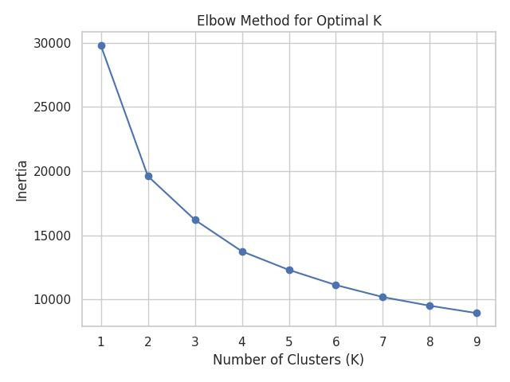
The elbow method is a simple and intuitive method for determining the optimal number of clusters in a data set. However, it is important to note that it is a heuristic method, and there is no guarantee that it will always find the optimal number of clusters.
Here are some tips for using the elbow method effectively:
- Use a variety of clustering algorithms and choose the one that gives the best results.
- Preprocess the data to remove outliers and noise.
- Use feature engineering to create new features that are more informative for the clustering task.
- Try different values for the elbow detection threshold.
- Use other metrics, such as the Silhouette Score, to validate the results of the elbow method.
Python Implementation
python code provided for Elbow method implementation locatted at "tabularData/dataModeling/cluster_elbow_method.py"
Dimensionality Reduction Techniques
There are many different dimensionality reduction techniques, each with its own strengths and weaknesses. Some of the most common dimensionality reduction techniques include:
| Technique | Description |
|---|---|
| Principal component analysis (PCA) | PCA is a linear dimensionality reduction technique that finds the principal components of the data, which are the directions in which the data varies the most. PCA is a simple and efficient technique, but it is not able to capture non-linear relationships in the data. |
| Kernel principal component analysis (KPCA) | KPCA is a non-linear extension of PCA that uses a kernel function to transform the data into a higher-dimensional space, where PCA is then performed. This allows KPCA to capture non-linear relationships in the data. However, KPCA is more computationally expensive than PCA and the results can be more difficult to interpret. |
| Linear discriminant analysis (LDA) | LDA is a supervised dimensionality reduction technique that is used to reduce the dimensionality of the data while preserving the information that is useful for discrimination between different classes. LDA is a powerful technique for classification, but it is not able to capture non-linear relationships in the data. |
| t-distributed stochastic neighbor embedding (t-SNE) | t-SNE is a non-linear dimensionality reduction technique that is used to visualize high-dimensional data in a low-dimensional space. t-SNE is able to preserve the local structure of the data, which makes it well-suited for visualization tasks. However, t-SNE is computationally expensive and the results can be difficult to interpret. |
| Uniform manifold approximation and projection (UMAP) | UMAP is a non-linear dimensionality reduction technique that is similar to t-SNE, but it is more efficient and produces more consistent results. UMAP is well-suited for visualization and clustering tasks. |
In addition to these general-purpose dimensionality reduction techniques, there are also many specialized techniques that have been developed for specific applications. For example, there are dimensionality reduction techniques for image processing, natural language processing, and financial data analysis.
Technical Comparison
| Technique | Date of creation | Work principle | Other important comparison points |
|---|---|---|---|
| Principal component analysis (PCA) | 1901 | Finds the principal components of the data, which are the directions in which the data varies the most. | Linear, simple to implement and understand, fast and efficient, interpretable results, sensitive to outliers |
| Kernel principal component analysis (KPCA) | 1999 | Uses a kernel function to transform the data into a higher-dimensional space, where PCA is then performed. | Non-linear, can capture non-linear relationships in the data, more robust to outliers than PCA, more computationally expensive than PCA, results can be more difficult to interpret |
| Linear discriminant analysis (LDA) | 1936 | Finds a linear combination of the features that maximizes the discrimination between different classes. | Supervised, powerful for classification, cannot capture non-linear relationships in the data |
| t-distributed stochastic neighbor embedding (t-SNE) | 2008 | Uses a probability distribution to embed the data in a lower-dimensional space while preserving the local structure of the data. | Non-linear, well-suited for visualization tasks, computationally expensive, results can be difficult to interpret |
| Uniform manifold approximation and projection (UMAP) | 2018 | Uses a fuzzy topological data analysis framework to embed the data in a lower-dimensional space while preserving the local and global structure of the data. | Non-linear, well-suited for visualization and clustering tasks, more efficient and produces more consistent results than t-SNE |
The best dimensionality reduction technique to use will depend on the specific characteristics of your data and your needs. It is important to experiment with different techniques to find the one that works best for your problem.
Principal Component Analysis (PCA)
Principal component analysis (PCA) is a statistical procedure that uses an orthogonal transformation to convert a set of observations of possibly correlated variables into a set of values of linearly uncorrelated variables called principal components. This transformation is defined in such a way that the first principal component has the largest possible variance (that is, accounts for as much of the variability in the data as possible), and each succeeding component in turn has the largest possible variance given that it is orthogonal to the preceding components. The resulting components are a linear combination of the original variables, and at any given component, information about the original variables is lost.
PCA is often used to reduce the dimensionality of data while preserving as much of the variation in the data as possible. This can be useful for many purposes, such as:
- Data visualization: PCA can be used to project high-dimensional data into a lower-dimensional space, which can make it easier to visualize and understand the data.
- Feature extraction: PCA can be used to extract the most important features from a dataset, which can be used to improve the performance of machine learning algorithms.
- Anomaly detection: PCA can be used to detect anomalies in a dataset, which can be useful for fraud detection and other applications.
PCA is a powerful tool that can be used for a variety of tasks. It is a popular technique in machine learning, statistics, and data science.
Example: Dimensionality Reduction using PCA
Here is an example of how PCA can be used to reduce the dimensionality of data:
Suppose we have a dataset of images of cats and dogs. Each image is represented by a vector of pixels, where each pixel is a value between 0 and 255. This means that each image is represented by a vector of length 1024 * 1024, which is very high-dimensional.
We can use PCA to reduce the dimensionality of this dataset while preserving as much of the variation in the data as possible. For example, we can reduce the dimensionality to 100 dimensions without losing too much information. This means that we can now represent each image by a vector of length 100, which is much easier to visualize and process.
Once we have reduced the dimensionality of the data, we can use PCA to visualize the data. For example, we can create a scatter plot of the first two principal components. This scatter plot will show us how the cats and dogs are distributed in the two-dimensional space.
We can also use PCA to extract the most important features from the dataset. For example, we can train a machine learning algorithm to classify the images as cats or dogs. We can then use PCA to extract the most important features from the dataset and use those features to train a new machine learning algorithm. This new algorithm will likely be more accurate than the original algorithm because it is trained on the most important features in the data.
PCA Algorithm
The steps involved in PCA Algorithm are as follows:
Step-01: Get data.
Step-02: Compute the mean vector (µ).
Step-03: Subtract mean from the given data.
Step-04: Calculate the covariance matrix.
Step-05: Calculate the eigen vectors and eigen values of the covariance matrix.
Step-06: Choosing components and forming a feature vector.
Step-07: Deriving the new data set.PRACTICE PROBLEMS BASED ON PRINCIPAL COMPONENT ANALYSIS
Problem-01
Given data = { 2, 3, 4, 5, 6, 7 ; 1, 5, 3, 6, 7, 8 }.
Compute the principal component using PCA Algorithm.
OR
Consider the two dimensional patterns (2, 1), (3, 5), (4, 3), (5, 6), (6, 7), (7, 8).
Compute the principal component using PCA Algorithm.
OR
Compute the principal component of following data-
CLASS 1
X = 2 , 3 , 4
Y = 1 , 5 , 3
CLASS 2
X = 5 , 6 , 7
Y = 6 , 7 , 8Solution
We use the above discussed PCA Algorithm
Step-01:
- Get data,The given feature vectors are
x1 = (2, 1)
x2 = (3, 5)
x3 = (4, 3)
x4 = (5, 6)
x5 = (6, 7)
x6 = (7, 8)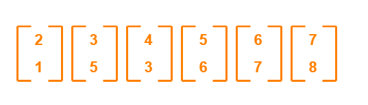
Step-02:
- Calculate the mean vector (µ).
Mean vector (µ)
= ((2 + 3 + 4 + 5 + 6 + 7) / 6, (1 + 5 + 3 + 6 + 7 + 8) / 6)
= (4.5, 5)Thus,
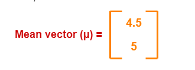
Step-03:
- Subtract mean vector (µ) from the given feature vectors.
x1 – µ = (2 – 4.5, 1 – 5) = (-2.5, -4)
x2 – µ = (3 – 4.5, 5 – 5) = (-1.5, 0)
x3 – µ = (4 – 4.5, 3 – 5) = (-0.5, -2)
x4 – µ = (5 – 4.5, 6 – 5) = (0.5, 1)
x5 – µ = (6 – 4.5, 7 – 5) = (1.5, 2)
x6 – µ = (7 – 4.5, 8 – 5) = (2.5, 3)Feature vectors (xi) after subtracting mean vector (µ) are
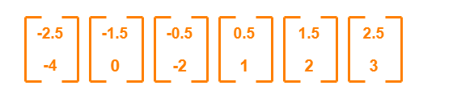
Step-04:
- Calculate the covariance matrix. Covariance matrix is given by
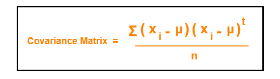
Now,
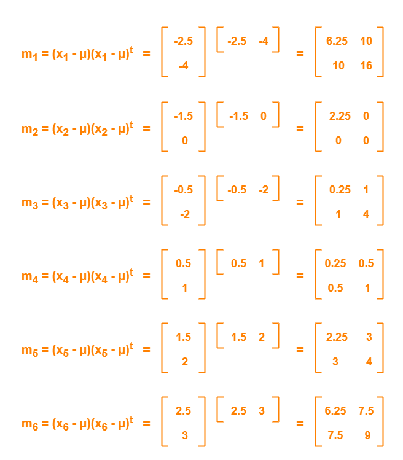
Now,
Covariance matrix
= (m1 + m2 + m3 + m4 + m5 + m6) / 6On adding the above matrices and dividing by 6, we get:
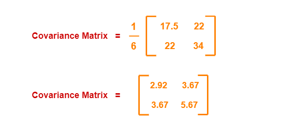
Step-05:
- Calculate the eigen values and eigen vectors of the covariance matrix.
λ is an eigen value for a matrix M if it is a solution of the characteristic equation |M – λI| = 0. So, we have:
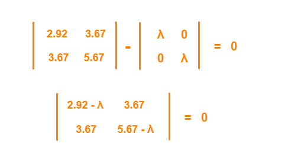
From here,
(2.92 – λ)(5.67 – λ) – (3.67 x 3.67) = 0
16.56 – 2.92λ – 5.67λ + λ2 – 13.47 = 0
λ2 – 8.59λ + 3.09 = 0
Solving this quadratic equation, we get λ = 8.22, 0.38
Thus, two eigen values are λ1 = 8.22 and λ2 = 0.38.Clearly, the second eigen value is very small compared to the first eigen value. So, the second eigen vector can be left out.
Eigen vector corresponding to the greatest eigen value is the principal component for the given data set. So. we find the eigen vector corresponding to eigen value λ1.
We use the following equation to find the eigen vector:
MX = λX
where-
M = Covariance Matrix
X = Eigen vector
λ = Eigen valueSubstituting the values in the above equation, we get
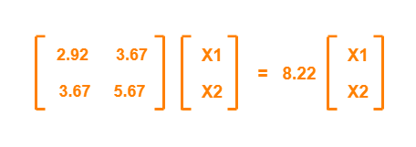
Solving these, we get:
2.92X1 + 3.67X2 = 8.22X1
3.67X1 + 5.67X2 = 8.22X2
On simplification, we get-
5.3X1 = 3.67X2 ………(1)
3.67X1 = 2.55X2 ………(2)From (1) and (2), X1 = 0.69X2
From (2), the eigen vector is
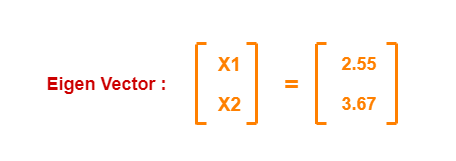
Thus, principal component for the given data set is
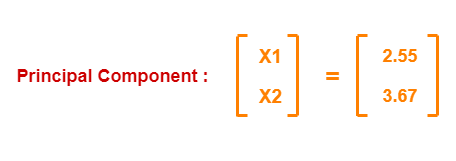
Lastly, we project the data points onto the new subspace as
Y = 2.55*C , X = 3.67C -🡪 Y = 2.55/3.67 X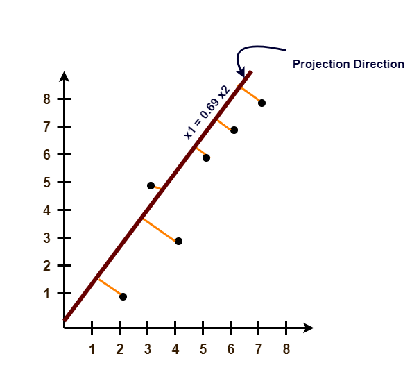
PCA Technical Points
There are various of points that one should take care during deciding using PCA, which we refered in "tabularData/dataModeling/PCA"
Along with Python script for determining the number of components in PCA "tabularData/dataModeling/pca_ncomponent.py"
Credits
- IBM Coursera Specialization